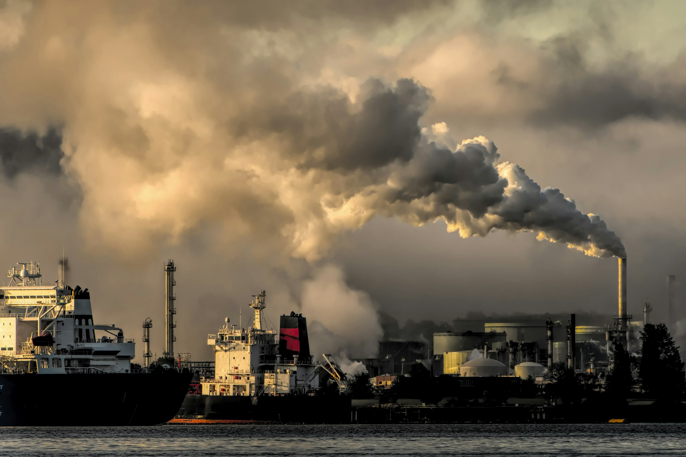
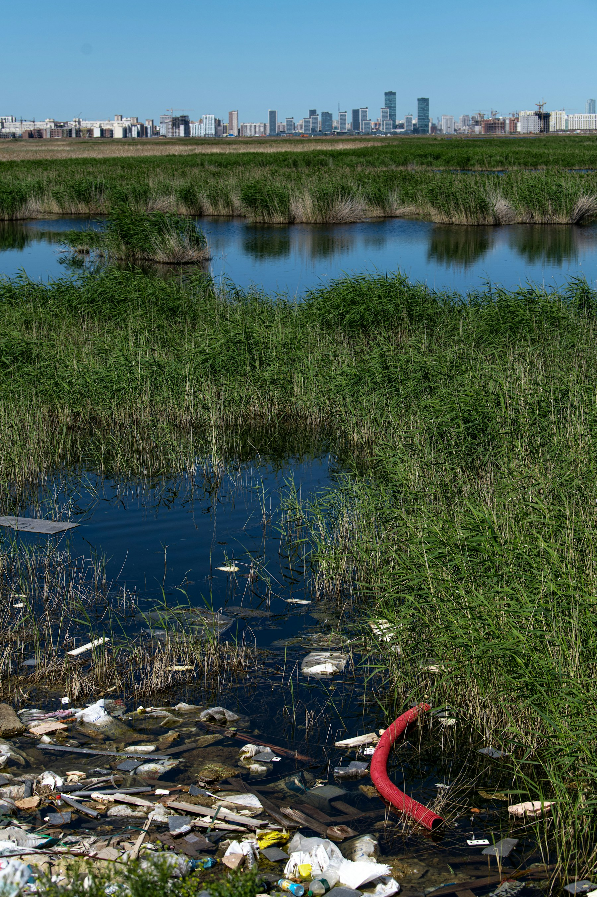
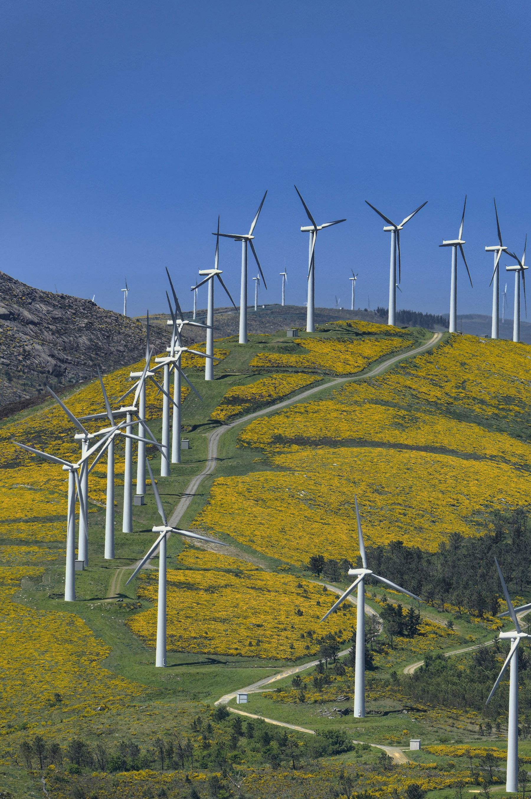

01 / THE AIR WE SHARE
A clearer
view of what’s
around us.
The first step toward a healthier environment is seeing it clearly. Explore the forces shaping the air, water and places we call home.
Follow the signal ↓
FIELD NOTE / 01INDUSTRY & AIR
OBSERVE / UNDERSTAND
ENVIRONMENT
IN FOCUS ↗
IN FOCUS ↗
SCROLL TO EXPLORE01 — 03
02 / WHAT FLOWS DOWNSTREAM
Every river
holds a record.
Water carries the story of the places it passes through. Observation, sampling and shared responsibility help make that story easier to read—and easier to change.
See the field notes ↘
WATER SYSTEMS↗
LANDSCAPE / OBSERVATION 02
02
03 / CHANGE IS BUILT
Better futures
are designed.

ENERGY IN TRANSITIONFIELD NOTE / 03
Cleaner systems take intent, evidence and time. The future is not a distant place; it is the sum of the choices made here.
03
INDEX / A LIVING PICTURE
THREE LENSES, ONE SHARED HOME